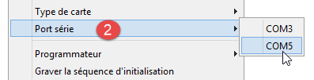
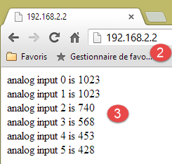
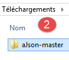
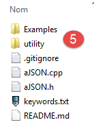
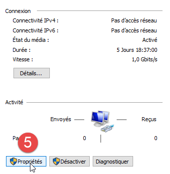
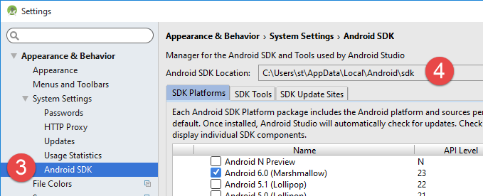
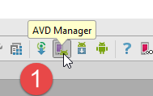
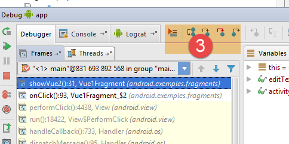

6. Appendices
Here we explain how to install the tools used in this document on Windows 7 through 10 machines. The reader should adapt these instructions to their own environment.
6.1. Installing the Arduino IDE
The official Arduino website is [http://www.arduino.cc/]. This is where you’ll find the development IDE for Arduinos [http://arduino.cc/en/Main/Software]:
 |  |
The downloaded file [1] is a ZIP file that, once extracted, creates the directory structure [2]. You can launch the IDE by double-clicking the executable file [3].
6.2. Installing the Arduino driver
In order for the IDE to communicate with an Arduino, the Arduino must be recognized by the host PC. To do this, follow these steps:
- Connect the Arduino to a USB port on the host computer;
- The system will then attempt to find the driver for the new USB device. It will not find it. You must then specify that the driver is located on the disk at <arduino>/drivers, where <arduino> is the installation folder for the Arduino IDE. ## 6.3. Testing the IDE
To test the IDE, follow these steps:
- Launch the IDE;
- connect the Arduino to the PC via its USB cable. For now, do not include the network card;
 |  |
- in [1], select the type of Arduino board connected to the USB port;
- in [2], specify the USB port to which the Arduino is connected. To find this out, unplug the Arduino and note the ports. Plug it back in and check the ports again: the one that has been added is the Arduino’s port;
Run some of the examples included in the IDE:
 |
The example is loaded and displayed:
 |
The examples included with the IDE are very educational and well-commented. Arduino code is written in C and consists of two distinct parts:
- a [setup] function that runs once when the application starts, either when it is "uploaded" from the host PC to the Arduino, or when the application is already present on the Arduino and the [Reset] button is pressed. This is where you place the application's initialization code;
- a [loop] function that runs continuously (infinite loop). This is where the core of the application goes.
Here,
- the [setup] function configures pin 13 as an output;
- the [loop] function turns it on and off repeatedly: the LED turns on and off every second.
 |
The displayed program is uploaded to the Arduino using the [1] button. Once uploaded, it runs and LED 13 begins to blink indefinitely.
6.4. Arduino network connection
The Arduino(s) and the host PC must be on the same private network:
 |
If there is only one Arduino, it can be connected to the host PC using a simple RJ-45 cable. If there is more than one, the host PC and the Arduinos will be connected to the same network via a mini-hub.
The host PC and the Arduinos will be placed on the 192.168.2.x private network.
- The IP addresses of the Arduinos are set by the source code. We’ll see how;
- The host computer’s IP address can be set as follows:
- Go to [Control Panel\Network and Internet\Network and Sharing Center]:
 |
- In [1], follow the link [Local Area Connection]
 |  |
- In [2], view the connection properties;
- In [4], view the IPv4 properties [3] of the connection;
 |
- In [5], assign the IP address [192.168.2.1] to the host computer;
- in [6], assign the subnet mask [255.255.255.0] to the network;
- confirm everything in [7]. ## 6.5. Testing a network application
Using the IDE, load the example [Examples / Ethernet / WebServer]:
/*
Web Server
A simple web server that displays the value of the analog input pins.
using an Arduino Wiznet Ethernet shield.
Circuit:
* Ethernet shield connected to pins 10, 11, 12, 13
* Analog inputs connected to pins A0 through A5 (optional)
created Dec 18, 2009
by David A. Mellis
modified April 9, 2012
by Tom Igoe
*/
#include <SPI.h>
#include <Ethernet.h>
// Enter a MAC address and IP address for your controller below.
// The IP address will depend on your local network:
byte mac[] = {
0xDE, 0xAD, 0xBE, 0xEF, 0xFE, 0xED };
IPAddress ip(192, 168, 1, 177);
// Initialize the Ethernet server library
// with the IP address and port you want to use
// (port 80 is the default for HTTP):
EthernetServer server(80);
void setup() {
// Open serial communications and wait for the port to open:
Serial.begin(9600);
while (!Serial) {
; // wait for serial port to connect. Needed for Leonardo only
}
// Start the Ethernet connection and the server:
Ethernet.begin(mac, ip);
server.begin();
Serial.print("server is at ");
Serial.println(Ethernet.localIP());
}
void loop() {
// listen for incoming clients
EthernetClient client = server.available();
if (client) {
Serial.println("new client");
// an HTTP request ends with a blank line
boolean currentLineIsBlank = true;
while (client.connected()) {
if (client.available()) {
char c = client.read();
Serial.write(c);
// if you've reached the end of the line (received a newline
// character) and the line is blank, the HTTP request has ended,
// so you can send a reply
if (c == '\n' && currentLineIsBlank) {
// send a standard HTTP response header
client.println("HTTP/1.1 200 OK");
client.println("Content-Type: text/html");
client.println("Connection: close");
client.println();
client.println("<!DOCTYPE HTML>");
client.println("<html>");
// add a meta refresh tag, so the browser reloads every 5 seconds:
client.println("<meta http-equiv=\"refresh\" content=\"5\">");
// output the value of each analog input pin
for (int analogChannel = 0; analogChannel < 6; analogChannel++) {
int sensorReading = analogRead(analogChannel);
client.print("analog input ");
client.print(analogChannel);
client.print(" is ");
client.print(sensorReading);
client.println("<br />");
}
client.println("</html>");
break;
}
if (c == '\n') {
// you're starting a new line
currentLineIsBlank = true;
}
else if (c != '\r') {
// you've encountered a character on the current line
currentLineIsBlank = false;
}
}
}
// give the web browser time to receive the data
delay(1);
// close the connection:
client.stop();
Serial.println("client disconnected");
}
}
This application creates a web server on port 80 (line 30) at the IP address specified on line 25. The MAC address on line 23 is the MAC address specified on the Arduino's network board.
The [setup] function initializes the web server:
- line 34: initializes the serial port on which the application will log data. We will monitor these logs;
- line 41: the TCP/IP node (IP, port) is initialized;
- line 42: the server from line 30 is launched on this network node;
- lines 43–44: logs the web server’s IP address;
The [loop] function implements the web server:
- line 50: if a client connects to the web server, [server].available returns that client; otherwise, it returns null;
- line 51: if the client is not null;
- line 55: as long as the client is connected;
- line 56: [client].available is true if the client has sent characters. These are stored in a buffer. [client].available returns true as long as this buffer is not empty;
- line 57: a character sent by the client is read;
- line 58: this character is echoed to the log console;
- line 62: In the HTTP protocol, the client and server exchange lines of text.
- The client sends an HTTP request to the web server by sending a series of text lines ending with an empty line;
- the server then responds to the client by sending a response and closing the connection;
Line 62: The server does nothing with the HTTP headers it receives from the client. It simply waits for the empty line: a line containing only the character \n;
- Lines 64–67: The server sends the client the standard text lines of the HTTP protocol. They end with a blank line (line 67);
- Starting on line 68, the server sends a document to its client. This document is dynamically generated by the server and is in HTML format (lines 68–69);
- line 71: a special HTML line that instructs the client browser to refresh the page every 5 seconds. Thus, the browser will request the same page every 5 seconds;
- Lines 73–80: The server sends the values of the Arduino’s 6 analog inputs to the client browser;
- line 81: the HTML document is closed;
- line 82: we exit the while loop from line 55;
- line 97: the connection with the client is closed;
- line 98: the event is logged in the log console;
- line 100: we loop back to the beginning of the loop function: the server will resume listening for clients. We mentioned that the client browser would request the same page every 5 seconds. The server will be there to respond again.
Modify the code on line 25 to include your Arduino’s IP address, for example:
Upload the program to the Arduino. Launch the log console (Ctrl-M) (M uppercase):
 |  |
- in [1], the log console. The server has been launched;
- in [2], using a browser, we request the Arduino’s IP address. Here, [192.168.2.2] is translated by default to [http://198.162.2.2:80];
- in [3], the information sent by the web server. If you view the source code of the browser page, you get:
Here, we can see the lines of text sent by the server. On the Arduino side, the log console displays what the client sends it:
- lines 2–9: standard HTTP headers;
- line 10: the empty line that terminates them.
Study this example carefully. It will help you understand the Arduino programming used in the lab.
6.6. The aJson library
In the lab assignment you’ll be writing, the Arduinos exchange lines of text in JSON format with their clients. By default, the Arduino IDE does not include a library for handling JSON. We’ll install the aJson library available at [https://github.com/interactive-matter/aJson].
 |  |
- In [1], download the zipped version from the GitHub repository;
- unzip the folder and copy the [aJson-master] folder [2] into the [<arduino>/libraries] folder [3], where <arduino> is the Arduino IDE installation folder;
 |  |  |
- in [4], rename this folder to [aJson];
- in [5], its contents.
Now, launch the Arduino IDE:
 |
Check that in the examples, you now have examples for the aJson library. Run and study these examples.
6.7. The Android tablet
The examples have been tested with the Samsung Galaxy Tab 2.
To test the examples on a tablet, you must first install the tablet’s driver on your development machine. The driver for the Samsung Galaxy Tab 2 can be found at the URL [http://www.samsung.com/fr/support/usefulsoftware/KIES/]:
 |
To test the examples, you will need to connect the tablet to a network (likely Wi-Fi) and know its IP address on that network. Here’s how to proceed (Samsung Galaxy Tab 2):
- Turn on your tablet;
- Look through the apps available on the tablet (top right) for the one called [Settings] with a gear icon;
- in the left-hand section, turn on Wi-Fi;
- in the right-hand section, select a Wi-Fi network;
- Once connected to the network, tap briefly on the selected network. The tablet’s IP address will be displayed. Write it down. You’ll need it;
Still in the [Settings] app,
- select the [Developer Options] option on the left (at the very bottom of the options);
- Make sure the [USB Debugging] option on the right is checked.
To return to the menu, tap the middle icon in the status bar at the bottom—the one that looks like a house. Still in the status bar at the bottom,
- the icon on the far left is the back button: it takes you back to the previous screen;
- the icon on the far right is the task manager. You can view and manage all tasks currently running on your tablet;
Connect your tablet to your PC using the included USB cable.
Plug the Wi-Fi dongle into one of the PC’s USB ports, then connect to the same Wi-Fi network as the tablet. Once that’s done, in a DOS window, type the command [ipconfig]:
Your PC has two network cards and therefore two IP addresses:
- the one on line 9, which is the PC’s address on the wired network;
- the one on line 17, which is the PC’s address on the Wi-Fi network;
Make a note of these two pieces of information. You'll need them. You are now in the following configuration:
 |
The tablet will need to connect to your PC. Your PC is normally protected by a firewall that prevents any external device from establishing a connection with it. You will therefore need to disable the firewall. Do this using the [Control Panel\System and Security\Windows Firewall] option. Sometimes you also need to disable the firewall set up by your antivirus software. This depends on your antivirus program.
Now, on your PC, check the network connection with the tablet using the command [ping 192.168.1.y], where [192.168.1.y] is the tablet’s IP address. You should see something like this:
Lines 4–7 indicate that the IP address [192.168.1.y] responded to the [ping] command.
6.8. Installing a JDK
The latest JDK can be found at the URL [http://www.oracle.com/technetwork/java/javase/downloads/index.html] (June 2016). We will refer to the JDK installation folder as <jdk-install> from here on.
 |
6.9. Installing the Genymotion emulator manager
The company [Genymotion] offers a high-performance Android emulator. It is available at the URL [https://cloud.genymotion.com/page/launchpad/download/] (June 2016).
You will need to register to obtain a version for personal use. Download the [Genymotion] product with the VirtualBox virtual machine:

We will refer to the [Genymotion] installation folder as <genymotion-install> from now on. Launch [Genymotion]. Then download an image for a tablet:
 |
- in [1], add the virtual terminal described in [2];
 |
- in [3], configure the terminal;
 |  |
- in [4-5], customize the terminal for your environment;
- in [6], launch the virtual terminal;
If all goes well, you will see the Android emulator window:

Sometimes, the Android emulator does not launch. On a Windows machine, you can check the following two points:
- Check that the [Hyper-V] virtual machine is not installed. If necessary, uninstall it [1-2];
 |  |
- then in the configuration wizard [Network and Sharing Center] [1]:
 |
 |  |
- in [3], select the network adapter(s) associated with the VirtualBox virtual machine;
 |
- verify that in [6], the driver for VirtualBox is checked. Repeat this step for all network adapters associated with the VirtualBox virtual machine; ## 6.10. Installing Maven
Maven is a tool for managing dependencies in a Java project and more. It is available at the URL [http://maven.apache.org/download.cgi].
 |
Download and unzip the archive. We will refer to the Maven installation folder as <maven-install>.
 |
- In [1], the [conf/settings.xml] file configures Maven;
It contains the following lines:
<!-- localRepository
| The path to the local repository Maven will use to store artifacts.
|
| Default: ${user.home}/.m2/repository
<localRepository>/path/to/local/repo</localRepository>
-->
The default value on line 4, if—as in my case—your {user.home} path contains a space (for example, [C:\Users\Serge Tahé]), may cause issues with certain software. In that case, you should write something like:
<!-- localRepository
| The path to the local repository Maven will use to store artifacts.
|
| Default: ${user.home}/.m2/repository
<localRepository>/path/to/local/repo</localRepository>
-->
<localRepository>D:\Programs\devjava\maven\.m2\repository</localRepository>
and on line 7, we will avoid a path that contains spaces.
6.11. Installing the Android Studio IDE
The Android Studio Community Edition IDE is available at [https://developer.android.com/studio/index.html] (June 2016):
 |
Install the IDE and then launch it. Follow steps [1-8] to install the SDK Manager components used by the examples that follow. If you decide to install newer components, you will likely receive warnings from Android Studio stating that the example configuration references SDK components that do not exist in your environment. You can then follow the suggestions provided by the IDE.
 |
 |
 |
- In [9], view the package details:
 |
- In [11] above, the examples used SDK Build-Tools 23.0.3;
- in [9-12] below, specify the folder where you installed the emulator manager [Genymotion];
 |  |
- In [13-18], configure the default project type;
 |  |
- in [17], the default value is usually correct;
- in [18], make sure you have JDK 1.8;
Below, in [19-26], disable spell checking, which is set to English by default;
 |  |
 |
- below, in [27-28], choose the type of keyboard shortcuts you want. You can keep IntelliJ’s default settings or choose those from another IDE you’re more accustomed to;
 |
- Below, in [29-30], enable line numbers in the code;
 |
- below, in [31-34], specify how you want to handle the first project when launching the IDE and subsequent projects;
 |
With Android 2.1 (May 2016), the [Instant Run] feature sometimes causes issues. In this document, we have disabled it:
 |  |
The Android Studio projects for the examples are available HERE|. Download them.
 |
The examples were built using the components defined previously:
- JDK 1.8;
- Android SDK Platform 23 for runtime;
The following SDK tools:
 |
If your environment does not match the one described above, you will need to change the project configuration. This can be quite tedious. Initially, it is probably easier to set up a working environment similar to the one described above.
Launch Android Studio and then open the [example-07] project, for example:
 |  |
 |
- In [1-3], open the [Example-07] project;
- In [4], check the [local.properties] file;
 |  |
- on line 11 above, enter the location of the Android SDK Manager <sdk-manager-install>. You can find this by following steps [1-4]:
 |
All examples in this document are Gradle projects configured by a [build.gradle] file [1-2]:
 |
The [build.gradle] file for Example 07 is as follows:
buildscript {
repositories {
mavenCentral()
mavenLocal()
}
dependencies {
// replace with the current version of the Android plugin
classpath 'com.android.tools.build:gradle:2.1.0'
// Since Android's Gradle plugin 0.11, you must use android-apt >= 1.3
classpath 'com.neenbedankt.gradle.plugins:android-apt:1.8'
}
}
apply plugin: 'com.android.application'
apply plugin: 'android-apt'
def AAVersion = '4.0.0'
dependencies {
apt "org.androidannotations:androidannotations:$AAVersion"
compile "org.androidannotations:androidannotations-api:$AAVersion"
compile 'com.android.support:appcompat-v7:23.4.0'
compile 'com.android.support:design:23.4.0'
compile fileTree(dir: 'libs', include: ['*.jar'])
}
repositories {
jcenter()
}
apt {
arguments {
androidManifestFile variant.outputs[0].processResources.manifestFile
resourcePackageName android.defaultConfig.applicationId
}
}
android {
compileSdkVersion 23
buildToolsVersion "23.0.3"
defaultConfig {
applicationId "android.examples"
minSdkVersion 15
targetSdkVersion 23
versionCode 1
versionName "1.0"
}
buildTypes {
release {
minifyEnabled false
proguardFiles getDefaultProguardFile('proguard-android.txt'), 'proguard-rules.pro'
}
}
compileOptions {
sourceCompatibility JavaVersion.VERSION_1_7
targetCompatibility JavaVersion.VERSION_1_7
}
}
Depending on the Android environment (SDK and tools) you have set up, you may need to change the versions in lines 8, 21, 22, 38, and 39. Android Studio helps by making suggestions. The easiest approach is to follow these suggestions.
The elements of the [build.gradle] file can be accessed in another way:
 |  |
- the various tabs in [3] reflect the different values in the [build.gradle] file. You can therefore configure it this way, which allows you to avoid syntax issues in the [build.gradle] file;
Another point to check is the JDK used by the IDE [5]:
 |
In [6], check the JDK.
All examples are Gradle projects with dependencies that need to be downloaded. To do this, proceed as follows:
 |   |
- In [5], compile the project;
Once the project is error-free, you must create a run configuration [1-8]:
 |  |
- In [8], you can specify that you always want to use the same terminal for execution. Generally, this option is checked to avoid having to specify the terminal to use for each new execution. Here, we leave it unchecked because we are going to test different Android devices;
- Once the run configuration has been created, launch the Android Emulator Manager [1-3];
 |  |
- if the Android emulator does not launch, check the points mentioned in section 6.11;
To launch the application on the emulator, proceed as follows [1-4]:
 |  |
- in [2], you should see the emulator you previously launched;
 |
- in [5], the view displayed by the emulator;
Now connect an Android tablet to a USB port on the PC and run the application on it:
 |
- In [6], select the Android tablet and test the application.
In [7], we have predefined virtual terminals. We will learn how to add and remove them.
 |
 |
In the screenshot above, all the devices listed are running API 22. We are removing them all because we want to use API 23. We follow the procedure [2-3] to remove the devices.

 |
- In [4-5], we add a tablet;
 |
- in [6], we select an API. Above, we select API 23 for 64-bit Windows;
 |
- In [7], the summary of the configuration is displayed;
- In [8], more advanced configuration of the virtual terminal can be performed;
 |
Once the wizard is complete, the created terminal appears in [9].
Once this is done, if you rerun [Example-07], you will now see the following window:
 |
- in [1], the new virtual terminal appears;
- in [2], you can create new ones;
Experiment to determine the virtual terminal best suited to your system. In this document, the examples have been tested primarily with the Genymotion emulator.
Regardless of the virtual terminal chosen, logs are displayed in the window called [Logcat] [1-2]:

Check these logs regularly. This is where exceptions that caused your program to crash will be reported.
You can also debug your program using standard debugging tools:
 |  |
- in [2], set a breakpoint by clicking once on the column to the left of the target line. Clicking again removes the breakpoint;
 |
- in [3], at the breakpoint, press:
- [F6] to execute the line without entering methods if the line contains method calls,
- [F5], to execute the line by entering the methods if the line contains method calls,
- [F8] to continue to the next breakpoint;
- [Ctrl-F2] to stop debugging; ## 6.13. Installing the Chrome plugin [Advanced Rest Client]
In this document, we use Google's Chrome browser (http://www.google.fr/intl/fr/chrome/browser/). We will add the [ Advanced Rest Client] extension to it. Here's how to do it:
- Go to the [Google Web Store] (https://chrome.google.com/webstore) using the Chrome browser;
- search for the [Advanced Rest Client] app:
 |
- the app is then available for download:
 |
- to get it, you’ll need to create a Google account. The [Google Web Store] will then ask for confirmation [1]:
 |  |
- in [2], the added extension is available in the [Applications] option [3]. This option appears on every new tab you create (CTRL-T) in the browser. ## 6.14. Managing JSON j s in Java
Transparently for the developer, the [Spring MVC] framework uses the [Jackson] JSON library. To illustrate what JSON (JavaScript Object Notation) is, we present here a program that serializes objects into JSON and does the reverse by deserializing the generated JSON strings to recreate the original objects.
The 'Jackson' library allows you to construct:
- the JSON string of an object: new ObjectMapper().writeValueAsString(object);
- an object from a JSON string: new ObjectMapper().readValue(jsonString, Object.class).
Both methods may throw an IOException. Here is an example.
 |
The project above is a Maven project with the following [pom.xml] file;
<?xml version="1.0" encoding="UTF-8"?>
<project xmlns="http://maven.apache.org/POM/4.0.0"
xmlns:xsi="http://www.w3.org/2001/XMLSchema-instance"
xsi:schemaLocation="http://maven.apache.org/POM/4.0.0 http://maven.apache.org/xsd/maven-4.0.0.xsd">
<modelVersion>4.0.0</modelVersion>
<groupId>istia.st.pam</groupId>
<artifactId>json</artifactId>
<version>1.0-SNAPSHOT</version>
<dependencies>
<dependency>
<groupId>com.fasterxml.jackson.core</groupId>
<artifactId>jackson-databind</artifactId>
<version>2.3.3</version>
</dependency>
</dependencies>
</project>
- lines 12–16: the dependency that includes the 'Jackson' library;
The [Person] class is as follows:
package istia.st.json;
public class Person {
// data
private String lastName;
private String firstName;
private int age;
// constructors
public Person() {
}
public Person(String lastName, String firstName, int age) {
this.lastName = lastName;
this.firstName = firstName;
this.age = age;
}
// signature
public String toString() {
return String.format("Person[%s, %s, %d]", lastName, firstName, age);
}
// getters and setters
...
}
The [Main] class is as follows:
package istia.st.json;
import com.fasterxml.jackson.databind.ObjectMapper;
import java.io.IOException;
import java.util.HashMap;
import java.util.Map;
public class Main {
// the serialization/deserialization tool
static ObjectMapper mapper = new ObjectMapper();
public static void main(String[] args) throws IOException {
// creating a person
Person paul = new Person("Denis", "Paul", 40);
// Display JSON
String json = mapper.writeValueAsString(paul);
System.out.println("JSON=" + json);
// Instantiate Person from JSON
Person p = mapper.readValue(json, Person.class);
// Display Person
System.out.println("Person=" + p);
// an array
Person virginie = new Person("Radot", "Virginie", 20);
Person[] people = new Person[]{paul, virginie};
// display JSON
json = mapper.writeValueAsString(people);
System.out.println("JSON people=" + json);
// dictionary
Map<String, Person> hpeople = new HashMap<String, Person>();
hpeople.put("1", paul);
hpeople.put("2", virginie);
// Display JSON
json = mapper.writeValueAsString(hpeople);
System.out.println("JSON hpeople=" + json);
}
}
Executing this class produces the following screen output:
Key takeaways from the example:
- the [ObjectMapper] object required for JSON/Object transformations: line 11;
- the [Person] --> JSON transformation: line 17;
- the JSON --> [Person] transformation: line 20;
- the [IOException] thrown by both methods: line 13.
6.15. Installing [ WampServer]
[WampServer] is a software suite for developing in PHP / MySQL / Apache on a Windows machine. We will use it solely for the MySQL DBMS.
 |  |
- On the [WampServer] website [1], choose the appropriate version [2],
- The downloaded executable is an installer. You will be asked for various pieces of information during the installation. These do not pertain to MySQL, so you can ignore them. Window [3] appears at the end of the installation. Launch [WampServer],
 |  |
- in [4], the [WampServer] icon appears in the taskbar at the bottom right of the screen [4],
- when you click on it, the [5] menu appears. It allows you to manage the Apache server and the MySQL DBMS. To manage the latter, use the [PhpMyAdmin] option,
- which opens the window shown below,

We will provide few details on using [PhpMyAdmin]. We demonstrate how to use it in the document.